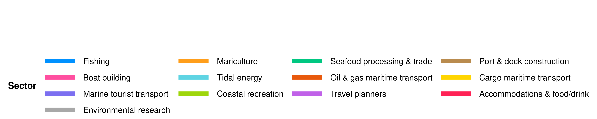
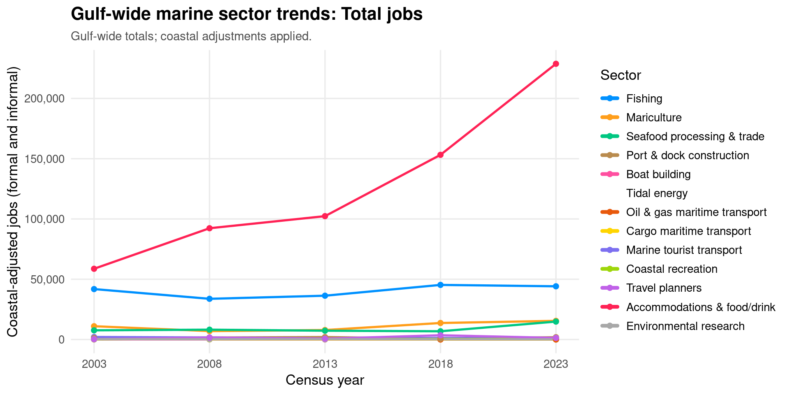

Medios de Vida y Economías EWG 3.1
Medios de Vida y Economías EWG 3.1
Vista previa: Medios de Vida y Economías (LE)
Planeamos revisar nuestras estimaciones actuales de los puntajes de LE en la reunión del Grupo de Trabajo de Expertos 3.1 el 16 de julio de 2026. Este documento tiene como objetivo ofrecer a los asistentes una visión general del modelo de la meta y sus insumos, y una vista previa de sus resultados, como preparación para la reunión. Si lo lee y tiene inquietudes metodológicas menores, señálelas y tráigalas a la reunión. Si tiene inquietudes metodológicas mayores, compártalas conmigo con anticipación (mi correo es smanos@nceas.ucsb.edu). Si no puede asistir a la reunión pero le gustaría conversar, con gusto podemos reunirnos uno a uno antes o después.
Le informamos que este documento está destinado únicamente a uso interno y con fines informativos. No debe interpretarse como la palabra final ni como material de calidad de revisión por pares.
Gracias por su continuo compromiso con este trabajo. ¡Esperamos conversar sobre estos puntajes con ustedes el 16 de julio!
Sobre la Meta de LE
Esta meta mide empleos e ingresos de industrias marinas sostenibles.
DEFINICIONES CENTRALES
- Meta general: Mide empleos e ingresos de industrias marinas sostenibles
- Dos submetas:
- Medios de Vida (LIV): Calidad y cantidad de empleos marinos
- Economías (ECO): Ingresos de sectores marinos en las regiones costeras
Modelo de la meta
LE = promedio(LIV, ECO)
LIV es el promedio del número de empleos y la calidad del empleo:
- Número de empleos: Empleos marinos escalados a población costera, comparados con un punto de referencia. Se muestran dos opciones para discusión entre expertos:
- Opción A (promedio histórico): promedio de empleos per residente costero en los años censales 2003, 2008 y 2013 para cada región
- Opción B (censo 2019): valor del Censo Económico 2019 de cada región (2018 en la serie ajustada de años censales)
- Calidad del empleo: Aportaciones patronales a seguridad social y otras prestaciones per empleo (J300A + J400A de Censos Económicos), comparadas con el cuantil 90 entre regiones y años (igual en ambos escenarios)
ECO rastrea ingresos marinos (M000A de Censos Económicos), comparados con la Opción A (promedio histórico 2003–2013) o la Opción B (Censo Económico 2019).
Los datos provienen de INEGI Censos Económicos (2003, 2008, 2013, 2018, 2023) con ajustes de población costera para regiones que abarcan costas del Golfo y del Pacífico.
Región 2 — limitación de datos: El LE general no se reporta (NA) para la Región 2 (Islas del Midriff Occidental). El municipio de San Quintín se incorporó el 12 de febrero de 2020; antes de esa fecha formaba parte de Ensenada. Tanto el Ensenada histórico como el San Quintín actual abarcan las costas del Pacífico y del Golfo de California, y la mayor parte de la población está en el lado del Pacífico. Como los Censos Económicos de INEGI se reportan a nivel municipal, los datos disponibles no fueron suficientes para estimar de manera confiable los empleos marinos del Golfo, la calidad del empleo o los ingresos para esta región.
Antecedentes de la meta y decisiones tomadas
Evaluamos la meta LE como dos submetas, siguiendo las convenciones del OHI y la orientación del Grupo de Guardianes de Metas y del Grupo de Trabajo de Expertos. La submeta de Medios de Vida (LIV) capturó la cantidad y calidad de empleos marinos disponibles para las personas que viven en regiones costeras del Golfo de California (GoC), y la submeta de Economías (ECO) capturó los ingresos generados por sectores marinos en esas regiones. Definimos el estado ideal para LIV como números estables o crecientes de empleos marinos de la misma o mayor calidad a lo largo del tiempo, y el estado ideal para ECO como ingresos mantenidos o crecientes de sectores marinos a lo largo del tiempo.
Elegimos incluir todos los sectores económicos marinos y relevantes para el Golfo, incluidos aquellos no totalmente dependientes de un océano saludable, como puertos, transporte marítimo e infraestructura de energía renovable. Hicimos esta elección porque omitir esos sectores habría subrepresentado la actividad económica real en el GoC y habría limitado el pilar de Acción de la evaluación para identificar brechas de gobernanza o manejo en esas industrias. No incorporamos un multiplicador de sostenibilidad en esta evaluación preliminar, aunque lo identificamos como un posible refinamiento futuro basado en opinión experta y calidad de manejo específica del sector.
Construimos la evaluación sobre microdatos de los Censos Económicos (CE), conducidos por INEGI, para las olas censales 2004, 2009, 2014, 2019 y 2024, que alineamos a los años de recolección de datos 2003, 2008, 2013, 2018 y 2023. Restringimos el extracto a los seis estados mexicanos que bordean el Golfo de California (Baja California Sur, Baja California, Sonora, Sinaloa, Nayarit y Jalisco) y obtuvimos conteos de establecimientos, códigos de actividad, empleo, prestaciones e ingresos a nivel municipal para cada ola. Elegimos el CE sobre alternativas como la Encuesta Nacional de Ocupación y Empleo (ENOE) y los Indicadores Laborales para los Municipios de México (ILMM) porque ofrecía un conteo completo de negocios formalmente registrados, permitía desagregación sectorial a escala municipal, y nos permitía medir empleo, prestaciones e ingresos de los mismos establecimientos, sistema de reporte y control de calidad de los datos.
Restringimos nuestros análisis a municipios asignados a las nueve regiones OHI predefinidas del GoC usando una tabla de consulta curada, y abordamos dos cambios en límites administrativos en Baja California. San Felipe se creó como municipio propio en 2021 y antes se contaba dentro de Mexicali; lo asignamos a la Región 1 por continuidad. Entre las olas 2019 y 2024, Ensenada se dividió en tres municipios, lo que causó una caída pronunciada en empleos, unidades económicas e ingresos de la Región 2 después de la desagregación. Por ello, tratamos la Región 2 como no comparable en una base temporal de empleos o ingresos para el año de recolección 2023 y la representamos en puntajes integrados usando solo su componente de calidad del empleo LIV. Para la Región 1 en 2023, excluimos Mexicali, retuvimos solo San Felipe, y aplicamos un factor de ajuste de población costera de 1, ya que San Felipe era totalmente costero.
Definimos actividades marinas usando una tabla de clasificación curada que mapeó códigos de actividad INEGI a sectores marinos generales y específicos, desarrollada con aportes del Grupo de Guardianes de Metas y validada contra el catálogo oficial de actividades del CE. Los sectores abarcaron provisión de alimentos (pesca, maricultura, procesamiento y comercio de mariscos), infraestructura (construcción y manejo de puertos y muelles, construcción naval), energía mareomotriz, transporte marítimo y costero (transporte marítimo de petróleo y gas, transporte marítimo de carga y mercancías), turismo marino (transporte turístico marino, recreación costera, agencias de viaje, alojamiento y alimentos/bebidas), e investigación y consultoría marina. Asumimos que la actividad en códigos explícitamente marinos era totalmente relevante para el Golfo, y para turismo, recreación, planificación de viajes, alojamiento, servicios de alimentos y investigación/consultoría ambiental, asumimos que solo la porción costera de la actividad era relevante para el Golfo y aplicamos una corrección costera basada en la proporción de población costera vs población municipal total. Excluimos la pesca deportiva como sector propio porque los datos del CE no podían aislarla, y la clasificamos como un área de mejora para trabajo futuro usando fuentes de datos alternativas; dicho esto, los empleos de pesca deportiva aún se incorporan en los resultados a través de los sectores de recreación costera, transporte turístico marino y pesca, bajo los cuales probablemente se clasifican.
Para armonizar los datos, estandarizamos identificadores e indicadores centrales entre olas (personal empleado total, aportaciones patronales a seguridad social, otras prestaciones sociales, ingresos, ingresos totales, unidades económicas y estrato de tamaño de establecimiento) y combinamos archivos estatales en un solo conjunto de datos en formato largo. Luego restringimos ese conjunto a municipios del GoC y actividades marinas, y resolvimos el estrato de tamaño de establecimiento y la codificación de confidencialidad usando una jerarquía consistente para que cada combinación de año, municipio y actividad se redujera a un solo total no duplicado.
Como algunas regiones del GoC abarcan tanto la costa del Golfo como la del Pacífico, y como varios sectores incluidos no son exclusivamente marinos, aplicamos un ajuste de población costera derivado de la población municipal INEGI 2020 dentro de 50 km de la costa del GoC respecto a la población regional total. Aplicamos este ajuste a todos los sectores en las Regiones 3 y 4, y a estos sectores en cada región: recreación costera, agencias de viaje, alojamiento y alimentos/bebidas, e investigación/consultoría ambiental. Los sectores explícitamente marinos en las regiones restantes retuvieron valores sin ajustar, y establecimos el ajuste en 1 para la Región 1 en 2023.
Consideramos dos estrategias de agregación y seleccionamos agregación por región y año en todos los sectores marinos combinados, en lugar de agregación separada por región, sector y año con puntos de referencia específicos del sector. Hicimos esta elección porque la supresión por confidencialidad en 2019 y 2024 dejó muchas combinaciones región-sector-año con datos insuficientes o inconsistentes, y porque la agregación sectorial ponderada habría requerido supuestos adicionales que podrían hacer que los puntajes reflejaran la estructura de datos más que el cambio económico real. Bajo este enfoque, una región podía obtener 100 incluso si algunos sectores individuales declinaron, siempre que otros sectores compensaran a nivel agregado; retuvimos resúmenes exploratorios a nivel sectorial para reporte e interpretación.
Variables del Censo Económico INEGI usadas en LE
La evaluación LE utiliza variables de los Censos Económicos (CE) de INEGI, armonizadas entre olas censales en un solo conjunto de datos en formato largo. Las definiciones completas de variables están en el diccionario de datos CE 2019 de INEGI (inglés).
| Variable | Resumen de definición | Interpretación / descripción | Submeta / indicador(es) usado(s) |
|---|---|---|---|
| J300A | Aportaciones patronales a seguridad social (IMSS, etc.) para trabajadores pagados | Formalización y protección continua de prestaciones mínimas (obligatorio para patrones; basado en el salario del empleado). Aportaciones patronales a esquemas de seguridad social. Son todas las aportaciones monetarias que la unidad económica cubrió con sus recursos a instituciones de seguridad social en beneficio de trabajadores pagados. | LIV (calidad del empleo) (numerador, sumado con J400A); Tendencias sectoriales marinas del Golfo (panel de calidad del empleo) |
| J400A | Otras prestaciones sociales adicionales (salud privada/alimentos/educación/cuidado infantil) | Prestaciones voluntarias, no obligatorias. Otras prestaciones sociales. Son pagos que la unidad económica hizo a instituciones privadas en beneficio de sus trabajadores o que otorgó directamente en especie al personal pagado, además de o como complemento a sueldos y salarios, como servicios médicos privados, vales de alimentos, primas de seguros, servicios educativos, becas de estudio y cuidado infantil. Excluye: aportaciones patronales a esquemas de seguridad social, compra de equipo, uniformes y ropa de trabajo; costos de capacitación; aguinaldos; gastos en actividades deportivas y recreativas; gastos de viaje, viáticos y comidas; además de todos los gastos reembolsables al trabajador. | LIV (calidad del empleo) (numerador, sumado con J300A); Tendencias sectoriales marinas del Golfo (panel de calidad del empleo) |
| H000A | Total de trabajadores | Personal empleado por la empresa. Incluye personal contratado directamente por la empresa, ya sea permanente, temporal o no remunerado, sindicalizado o no sindicalizado, que trabajó durante el año de referencia para la unidad económica, sujeto a su dirección y control, cubriendo al menos un tercio de las horas de trabajo de la unidad. Incluye: personal que trabajó fuera de la unidad económica bajo su control laboral y legal; trabajadores a destajo; trabajadores en huelga; personas con licencia por enfermedad, vacaciones o permiso temporal. Excluye: pensionados y jubilados; personal en licencia ilimitada y personal que trabajó exclusivamente por honorarios o comisiones sin recibir salario base; así como personal de empresas contratadas para prestar servicios como limpieza, jardinería o seguridad, entre otros. | LIV (número de empleos) (numerador para empleos per residente costero); LIV (calidad del empleo) (denominador para prestaciones per empleo); Tendencias sectoriales marinas del Golfo (panel de empleos) |
| H010A | Total de trabajadores pagados | Personal pagado total: incluye a todas las personas que trabajaron durante el periodo de referencia y dependían contractualmente de la unidad económica, sujetas a su dirección y control, a cambio de remuneración fija y periódica. | No se usa en los puntajes actuales de LE (señalado para discusión entre expertos como denominador más preciso para J300A + J400A per empleo) |
| H020A | Trabajadores no remunerados | Propietarios, familiares y otros trabajadores no remunerados, total: son personas que trabajaron bajo la dirección y control de la unidad económica, cubriendo al menos un tercio de las horas de trabajo de la unidad, sin recibir sueldo o salario fijo regular. Incluye propietarios, familiares, socios activos, personal que trabajó para la unidad económica recibiendo solo propinas, prestadores de servicio social, becarios del sistema nacional de empleo o en programas de capacitación, trabajadores a mérito y trabajadores voluntarios. Excluye personas que prestaron servicios profesionales o técnicos y cobraron honorarios por ello; pensionados, jubilados; y personal suministrado por otra empresa. | Solo contexto; no se usa en el puntaje LE |
| M000A | Ingresos totales por suministro de bienes y servicios (millones de pesos) | Ingresos operativos por bienes y servicios producidos y vendidos; excluye ingresos financieros y ganancias extraordinarias que pueden introducir volatilidad entre olas censales. Deflactados a MXN constantes de 2023 antes del puntaje. | ECO; Tendencias sectoriales marinas del Golfo (panel de ingresos) |
| A800A | Ingresos totales, incluidos ingresos financieros y extraordinarios (millones de pesos) | Medida de ingresos más amplia que M000A. Disponible en el archivo CE limpio pero no se usa en LE porque M000A rastrea mejor la actividad económica marina productiva. | No se usa en el puntaje LE |
| UE | Unidades económicas (establecimientos) en la actividad | Conteo de unidades económicas formalmente registradas que reportan en el CE para una actividad, municipio y año dados. | Solo exploratorio; no se usa en el puntaje de estado actual |
Los valores del CE para J300A, J400A, M000A y A800A se reportan en millones de pesos y se convierten a pesos antes del ajuste por inflación.
Estado general de Medios de Vida y Economías
Escenarios de referencia para discusión entre expertos
Para número de empleos e ingresos ECO, las gráficas siguientes muestran dos opciones de referencia en figuras separadas (referencia histórica arriba, referencia 2019 abajo). La calidad del empleo usa el mismo cuantil 90 del Golfo en ambos escenarios.
| Componente | Opción A: promedio histórico 2003–2013 | Opción B: Censo Económico 2019 |
|---|---|---|
| Número de empleos | Promedio de empleos per residente costero en 2003, 2008 y 2013 | Empleos per residente costero en la ola censal 2019 (2018 en serie ajustada) |
| Ingresos ECO | Promedio de ingresos marinos en 2003, 2008 y 2013 | Ingresos marinos totales en la ola censal 2019 (2018 en serie ajustada) |
| Calidad del empleo | Cuantil 90 entre todas las regiones y años (ambos escenarios) | Igual |
El grupo de trabajo experto puede comparar cómo cambian las trayectorias regionales bajo cada referencia y decidir qué línea base refleja mejor las expectativas de manejo para medios de vida y economías marinas estables o en mejora.
El puntaje de estado actual de Medios de Vida y Economías (LE) mide qué tan bien cada región OHI del Golfo de California sustenta empleo e ingresos marinos sostenibles. Combina dos submetas con igual peso: Medios de Vida (LIV), que cubre cantidad y calidad del empleo, y Economías (ECO), que cubre ingresos del sector marino. Los puntajes se calculan en cada año del Censo Económico INEGI (2003, 2008, 2013, 2018 y 2023) para ocho de las nueve regiones marinas OHI; la Región 2 se excluye por datos censales municipales insuficientes (véase abajo). Un puntaje de 100 representa el punto de referencia bajo el escenario elegido.
Qué significan los puntajes para revisión entre expertos: Puntajes LE más altos indican que los sectores marinos proporcionan más empleos e ingresos respecto a la referencia seleccionada, con calidad de empleo adecuada. Puntajes más bajos señalan menor intensidad de empleo, prestaciones más delgadas per empleo, o ingresos por debajo de la referencia. Como revisores amigables, pueden comparar líneas regionales bajo ambas opciones de referencia para ver qué tan sensibles son las conclusiones a la elección de la línea base.
Sectores marinos incluidos: pesca, maricultura, procesamiento y comercio de mariscos, construcción/manejo de puertos y muelles, construcción naval, energía mareomotriz, transporte marítimo de petróleo y gas, transporte marítimo de carga, transporte turístico marino, recreación costera, agencias de viaje, alojamiento y alimentos/bebidas, e investigación/consultoría ambiental.
Fuentes de datos: INEGI Censos Económicos para unidades económicas marinas, con ajustes de población costera para regiones que abarcan costas del Golfo y del Pacífico.
Procesamiento de datos: Los ingresos (M000A) y prestaciones laborales (J300A + J400A) se ajustan a MXN constantes de 2023 usando índices de precios nacionales. Los multiplicadores costeros derivados de población 2020 escalan las Regiones 3 y 4 (y sectores relacionados con turismo que no son explícitamente marinos) para aislar empleos e ingresos específicos de áreas costeras del GoC. Mexicali se excluye de datos 2023 de Baja California; la Región 1 usa solo San Felipe.
Región 2: El LE general es NA para la Región 2 (Islas del Midriff Occidental) porque los datos censales a nivel municipal no pueden separar de manera confiable el empleo e ingresos marinos del Golfo del contexto más amplio de los municipios de Ensenada y San Quintín, que abarcan ambas costas. Vea la nota de limitación de datos de la Región 2 arriba.
Método: Para regiones con datos suficientes, LE es el promedio de LIV y ECO.
\text{LE}_{r,t} = \begin{cases} \text{NA} & r = \text{Region\_2} \\ \frac{\text{LIV}_{r,t} + \text{ECO}_{r,t}}{2} & \text{en otro caso} \end{cases}
Los puntajes superiores a 100 se limitan a 100 a nivel de componente.
Cómo leer las gráficas: Cada línea de color es una región OHI a lo largo de años censales (no anuales). La línea punteada en 100 es la meta de referencia. Las gráficas que dependen de la referencia de empleos o ingresos muestran dos figuras separadas para cada métrica (referencia histórica arriba, referencia 2019 abajo). Como los datos solo están disponibles en intervalos censales, las líneas conectan cinco puntos; cambios pronunciados entre puntos reflejan variaciones plurianuales, no volatilidad año a año.
Trayectorias regionales del LE general
Qué mide: Avance combinado en empleo e ingresos marinos respecto a condiciones históricas de referencia.
Fuente de datos: INEGI Censos Económicos (2003 a 2023), salidas integradas de estado actual.
Método: Promedio de las submetas LIV y ECO para regiones con datos suficientes. La Región 2 se excluye (NA).
\text{LE}_{r,t} = \begin{cases} \text{NA} & r = \text{Region\_2} \\ \frac{\text{LIV}_{r,t} + \text{ECO}_{r,t}}{2} & \text{en otro caso} \end{cases}
Las gráficas siguientes muestran el estado actual del LE por región a lo largo de años censales bajo ambos escenarios de referencia. La Región 2 no aparece porque los puntajes no se reportan. La línea punteada en 100 marca la meta de referencia.
Trayectorias del Golfo para LE general
Qué mide: El puntaje general de LE, calculado como promedio de todas las regiones del OHI GoC y de todos los años.
Fuente de datos: Resultados combinados de los Censos Económicos del INEGI; el promedio del Golfo se calculó como la media de los índices de nivel de vida (LE) regionales en cada año censal, excluyendo la Región 2 debido a problemas de calidad de los datos.
Método: La línea del Golfo promedia las ocho regiones con puntajes reportados de LE (Región 2 excluida):
\text{LE}^{\text{GOC}}_{t} = \frac{1}{8}\sum_{r \neq \text{Region\_2}} \text{LE}_{r,t}
Las gráficas del Golfo resumen la trayectoria promedio entre regiones con datos suficientes. Para cada vista, la gráfica de referencia histórica aparece arriba de la gráfica de referencia 2019.
Submeta LIV
La submeta de Medios de Vida (LIV) integra el número de empleos marinos (escalado a población costera) y la calidad de esos empleos (aportaciones patronales a seguridad social y otras prestaciones por empleo). LIV no se reporta para la Región 2 porque los datos censales a nivel municipal de Ensenada y San Quintín no pueden aislar de manera confiable el empleo marino del Golfo (véase la limitación de datos de la Región 2 arriba).
Qué significan los puntajes para revisión entre expertos: Puntajes LIV más altos reflejan más empleos marinos per residente costero y/o mejores prestaciones patronales per empleo. Compare si la cantidad y calidad del empleo se mueven en la misma dirección entre regiones y escenarios de referencia.
Fuentes de datos: Variables de empleo y remuneración de Censos Económicos INEGI (H000A, J300A, J400A, etc.) para unidades económicas marinas; población INEGI interpolada a años censales con multiplicadores costeros.
Procesamiento de datos: Los empleos se suman entre sectores marinos, se ajustan por porción costera, se dividen entre población costera interpolada, y se comparan con el promedio per cápita 2003–2013 (Opción A) o el valor del Censo Económico 2019 (Opción B). La calidad del empleo suma J300A y J400A per empleo (MXN constantes 2023) y se compara con el cuantil 90 del Golfo entre todas las regiones y años censales (sin cambios entre escenarios).
Método:
\text{LIV}_{r,t} = \begin{cases} \text{NA} & r = \text{Region\_2} \\ \frac{\text{Jobs}_{r,t} + \text{Qual}_{r,t}}{2} & \text{en otro caso} \end{cases}
Resultado integrado de LIV
Qué mide: Avance combinado en cantidad y calidad del empleo marino.
Fuente de datos: INEGI Censos Económicos (2003 a 2023).
Método: Promedio de puntajes de número de empleos y calidad del empleo. La Región 2 se excluye (NA).
\text{LIV}_{r,t} = \begin{cases} \text{NA} & r = \text{Region\_2} \\ \frac{\text{Jobs}_{r,t} + \text{Qual}_{r,t}}{2} & \text{en otro caso} \end{cases}
Subcomponentes de LIV
Número de empleos
Qué mide: Empleos marinos per habitante costero respecto a un punto de referencia regional.
Qué significan los puntajes para revisión entre expertos: Un puntaje de 100 significa que los empleos per residente costero alcanzan o superan la referencia. Puntajes más bajos indican que la intensidad del empleo marino ha disminuido respecto a la población costera.
Fuente de datos: Empleo total INEGI Censos Económicos (H000A) en sectores marinos; población municipal INEGI interpolada a años censales y ajustada con multiplicadores de población costera para regiones que abarcan costas del Golfo y del Pacífico.
Procesamiento de datos: Empleos agregados por región y año censal siguiendo la lógica de ajuste costero: Regiones 3 y 4 escaladas por proporción de población costera del Golfo; sectores turísticos (recreación costera, agencias de viaje, alojamiento/alimentos/bebidas, investigación ambiental) escalados en todas las regiones. Mexicali excluida de 2023; San Felipe representa la Región 1. La Región 2 no se puntúa porque San Quintín (incorporado el 12 de febrero de 2020) y el Ensenada histórico abarcan ambas costas del Pacífico y del Golfo con la mayor parte de la población en el lado del Pacífico, lo que impide estimar de manera confiable empleos del Golfo a partir de datos censales municipales.
Método (Opción A, promedio histórico): Empleos per población costera en año t divididos entre el promedio de empleos per población costera de 2003, 2008 y 2013, limitado a 100.
\text{Jobs}^{A}_{r,t} = \min\left(100,\ \frac{(J^{\text{marine}}_{r,t} / P^{\text{coastal}}_{r,t})}{\overline{J^{\text{marine}}/P^{\text{coastal}}}_{r,\,2003\text{-}2013}} \times 100\right)
Método (Opción B, censo 2019): Empleos per población costera en año t divididos entre el valor del Censo Económico 2019 para esa región (año censal 2018 en la serie ajustada), limitado a 100.
\text{Jobs}^{B}_{r,t} = \min\left(100,\ \frac{(J^{\text{marine}}_{r,t} / P^{\text{coastal}}_{r,t})}{(J^{\text{marine}}/P^{\text{coastal}})_{r,2019}} \times 100\right)
Empleos marinos brutos por región
Esta gráfica muestra conteos de empleo sin escalar (después de ajustes costeros) antes de convertirse a puntajes de estado actual. Úsela para ver niveles absolutos de empleo entre años censales. Los valores reflejan H000A total sumado entre todos los sectores marinos per región. Las líneas conectan solo los años censales 2003, 2008, 2013, 2018 y 2023. Los valores de la Región 2 no deben interpretarse porque los datos censales municipales no pueden separar de manera confiable el empleo del Golfo.
Calidad del empleo
Entendiendo J300A y J400A
Usamos J300A + J400A per empleo (deflactados a MXN constantes de 2023, divididos entre H000A) como nuestra métrica de calidad del empleo en lugar de remuneración total o salario porque la agregación sectorial del CE puede distorsionarse por valores atípicos; por ejemplo, el salario alto de un director general de un resort podría inflar la remuneración promedio incluso cuando la mayoría de los trabajadores en ese municipio y sector tienen roles de menor salario.
J300A: aportaciones patronales a seguridad social (obligatorias)
En el CE de INEGI, J300A agrega todas las aportaciones monetarias que una unidad económica pagó con sus propios recursos a instituciones de seguridad social en nombre de trabajadores pagados (expresadas en millones de pesos por actividad, municipio y año). Esto captura aportaciones del lado patronal solamente, no la porción del trabajador, y cubre IMSS, ISSSTE y otras instituciones aplicables, no solo IMSS.
El sistema obligatorio de seguridad social de México (Ley del Seguro Social) requiere que los patrones registren empleados formales y hagan aportaciones mensuales calculadas sobre el Salario Base de Cotización (SBC), salario integrado que incluye sueldos, bonos y pagos recurrentes, cubriendo seguro de riesgos de trabajo, enfermedad y maternidad, invalidez y vida, retiro y guarderías. Como las aportaciones escalan con salarios registrados y plantilla, J300A funciona como proxy tanto de niveles salariales formales como del grado de formalización laboral dentro de un sector o ubicación.
Comparado con Estados Unidos, donde las aportaciones patronales FICA son aproximadamente 7.65% de los salarios (Seguro Social + Medicare) sin mandato de atención médica incluida, la carga patronal en México típicamente corre 20–30%+ del SBC dependiendo del salario y la clase de riesgo de la industria, e incluye atención médica en las aportaciones de nómina. J300A captura por tanto algo más amplio que un “impuesto patronal de nómina” estadounidense, más cercano a impuestos de nómina más cobertura de salud patronal combinados. La calidad de la atención a través del IMSS varía, pero aportaciones sostenidas significan que los trabajadores retienen como mínimo acceso a atención médica, protección por discapacidad, ahorro para retiro y prestaciones de maternidad.
J400A: otras prestaciones sociales (voluntarias)
J400A captura pagos a instituciones privadas o prestaciones en especie otorgadas directamente al personal pagado más allá de sueldos y aportaciones obligatorias J300A: complementos médicos privados, vales de alimentos, primas de seguros, servicios educativos, becas de estudio y cuidado infantil. Son totalmente voluntarias y pueden variar bruscamente según las circunstancias del patrón. J400A es típicamente 3–10× menor que J300A y más volátil entre regiones y años, especialmente en las Regiones 3, 4 y 9, porque las prestaciones voluntarias se concentran en un pequeño número de establecimientos grandes.
Por qué los sumamos
J300A refleja el mantenimiento de niveles salariales formales y estatus legal de empleo; aportaciones sostenidas indican que los trabajadores retienen acceso a atención médica IMSS, seguro de invalidez y vida, ahorro para retiro y protecciones de maternidad. J400A refleja si los patrones sostienen inversiones voluntarias por encima del mínimo legal. Juntos miden mantenimiento relativo de la calidad del empleo contra la referencia del cuantil 90 del Golfo, no un estándar absoluto de salario digno.
Nota sobre el denominador: Las prestaciones se dividen entre H000A (personal empleado total) en el modelo LE actual, consistente en todos los años censales del archivo limpio. H010A (solo personal pagado) sería un denominador más preciso porque J300A y J400A aplican a trabajadores pagados; lo señalamos para discusión entre expertos. H000A incluye propietarios no remunerados y familiares que no generan J300A/J400A, lo que puede reducir ligeramente los valores de prestaciones per empleo.
Matices interpretativos para revisión entre expertos:
- Un aumento de (J300A + J400A) per empleo en pesos constantes puede reflejar crecimiento salarial real, mayor formalización, cambios en la mezcla industrial hacia sectores de mayor riesgo o salario, o crecimiento de prestaciones voluntarias.
- Valores decrecientes pueden indicar estancamiento salarial, prestaciones complementarias más delgadas, o crecimiento de empleos formales de menor salario en el margen.
- La reforma de subcontratación de México 2021 (reforma de subcontratación) pudo haber incrementado tanto aportaciones como plantillas H010A alrededor de la ola censal 2024; parte del movimiento interanual puede reflejar reorganización legal más que cambio subyacente de compensación.
- No usamos remuneración total o salario directamente porque la agregación a nivel sector es sensible a valores atípicos de altos ingresos que no representan condiciones típicas de los trabajadores.
Qué mide: Aportaciones patronales a seguridad social y otras prestaciones sociales per empleo marino (J300A + J400A, en pesos constantes de 2023) respecto al cuantil 90 entre todas las regiones y años censales.
Qué significan los puntajes para revisión entre expertos: Puntajes más altos indican que los empleadores proporcionan más seguridad social y prestaciones en especie per trabajador, acercándose a las mejores regiones-año del Golfo. Puntajes más bajos sugieren paquetes de prestaciones más delgados respecto a la referencia del cuantil 90 del Golfo.
Fuente de datos: Variables J300A (aportaciones patronales a seguridad social) y J400A (otras prestaciones sociales) de Censos Económicos INEGI para unidades económicas marinas.
Procesamiento de datos: J300A y J400A sumados y deflactados a MXN constantes 2023, divididos entre H000A por región y año censal, luego comparados con la referencia del cuantil 90 agrupado.
Método: Prestaciones per empleo divididas entre la referencia del cuantil 90 del Golfo, limitado a 100.
\text{Qual}_{r,t} = \min\left(100,\ \frac{(J300A_{r,t} + J400A_{r,t}) / H000A_{r,t}}{Q_{90}} \times 100\right)
donde Q_{90} es el cuantil 90 de (J300A + J400A) / H000A entre todas las regiones y años censales.
Submeta ECO
La submeta de Economías (ECO) rastrea los ingresos operativos totales del sector marino respecto a un punto de referencia regional. Refleja la escala económica de sectores marinos sin contar doblemente ingresos financieros o extraordinarios. ECO no se reporta para la Región 2 por las mismas limitaciones de datos municipales descritas arriba.
Qué significan los puntajes para revisión entre expertos: Puntajes ECO más altos indican que los ingresos marinos regionales alcanzan o superan la referencia seleccionada. Puntajes más bajos señalan producción económica por debajo de esa referencia, un aspecto que vale la pena discutir con el grupo de trabajo experto.
Fuentes de datos: Variable M000A de INEGI Censos Económicos (ingresos totales por suministro de bienes y servicios, en pesos constantes de 2023) para unidades económicas marinas, con ajustes costeros.
Procesamiento de datos: M000A deflactado a MXN constantes de 2023; multiplicadores costeros aplicados a Regiones 3, 4 y sectores relacionados con turismo; agregado por región y año censal.
Método (Opción A — promedio histórico):
\text{ECO}^{A}_{r,t} = \min\left(100,\ \frac{M000A_{r,t}}{\overline{M000A}_{r,\,2003\text{-}2013}} \times 100\right)
Método (Opción B — censo 2019):
\text{ECO}^{B}_{r,t} = \min\left(100,\ \frac{M000A_{r,t}}{M000A_{r,2019}} \times 100\right)
Resultado de ECO
Qué mide: Ingresos operativos marinos respecto a la referencia regional (promedio histórico o censo 2019, según la figura).
Fuente de datos: INEGI Censos Económicos M000A para sectores marinos (pesca, maricultura, procesamiento/comercio de mariscos, construcción de puertos/muelles, construcción naval, energía mareomotriz, transporte marítimo de petróleo/gas, transporte marítimo de carga, transporte turístico marino, recreación costera, agencias de viaje, alojamiento/alimentos/bebidas, investigación/consultoría ambiental), ajustados a pesos constantes de 2023.
Método: Ingresos marinos totales en año t divididos entre el valor de referencia de esa región. Puntajes en o por encima de la referencia reciben 100; valores más bajos reflejan reducciones proporcionales. Las gráficas muestran ambas opciones de referencia.
Ingresos marinos brutos por región
Esta gráfica muestra ingresos operativos totales en MXN constantes de 2023 antes del puntaje de estado actual. Úsela para comparar escala económica absoluta entre regiones y años censales. Los ingresos reflejan M000A sumado entre sectores marinos (pesca, maricultura, procesamiento/comercio de mariscos, construcción de puertos/muelles, construcción naval, energía mareomotriz, transporte marítimo de petróleo/gas, transporte marítimo de carga, transporte turístico marino, recreación costera, agencias de viaje, alojamiento/alimentos/bebidas, investigación/consultoría ambiental) después de ajustes costeros. Los valores de la Región 2 no deben interpretarse porque los datos censales municipales no pueden separar de manera confiable los ingresos del Golfo.
Tendencias sectoriales marinas del Golfo
Estas gráficas usan el archivo de actividad CE limpio del script 1, con los mismos ajustes de población costera aplicados en los scripts 2 a 4. Empleos son totales H000A ajustados costeros sumados en todas las regiones OHI. Calidad del empleo es (J300A + J400A) en MXN constantes de 2023 per empleo. Ingresos es M000A ajustado costero en MXN constantes de 2023. Las líneas están coloreadas por sector marino.
Clave de colores por sector

Una figura con tres paneles: empleos totales, prestaciones per empleo e ingresos totales, cada uno sumado en todas las regiones OHI. Use la clave de colores por sector arriba para leer las líneas en cada panel.
